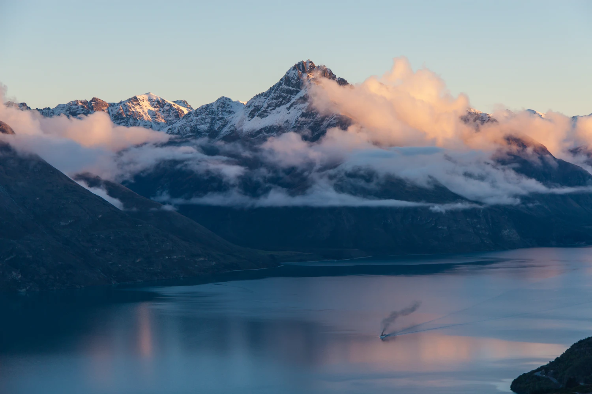

New Zealand

Welcome to New Zealand
What to do?

New Zealand has something for everyone. Besides the breathtaking nature that New Zealand has to offer you can skydive, go bungiejump, visit Hobbiton or go to one of many big cities. New Zealand offers a wide selection of different natures, from tall, snow covered mountains to deep valleys, beautiful beaches to fjords/sounds and rainforests. No words or pictures could ever do this country justice, so why don't you book a flight and see it for yourself?
Cathedral Cove is located at Hahei, just 10minutes drive from the famous Hot Water Beach.
Foot access to Cathedral Cove starts at the top of Grange Road. Parking is at the Visitor Car Park on Pa Road (turn right just after entering Hahei). During the summer months a shuttle service runs from the visitor car park on Pa Road to the start of the Cathedral Cove track. Alternatively you can walk from the car park around the beach to the start of the track which will take an extra 20mins.
It is here that you can also access Gemstone Bay and Mares Leg.
Cathedral Cove Marine Reserve, Te Whanganui- A-Hei, covers 9 square kilometres and is New Zealand’s sixth marine reserve. It is administered by the Department of Conservation.
The Hobbiton Movie Set was a significant location used for The Lord of the Rings film trilogy and The Hobbit film series. It is situated on a family run farm about 8 kilometres (5.0 mi) west of Hinuera and 10 kilometres (6.2 mi) southwest of Matamata, in Waikato, New Zealand, and is now a Tolkien tourism destination, offering a guided tour of the set.
Described by Rudyard Kipling as the 'eighth wonder of the world', Milford Sound was carved by glaciers during the ice ages. Breathtaking in any weather, the fiord's cliffs rise vertically from the dark waters, mountain peaks scrape the sky and waterfalls cascade downwards from as high as 1000 metres. When it rains in Milford Sound, and it often does, those waterfalls multiply with magnificent effect.
Boat cruises – during the day or overnight – are an excellent way to experience the Sound. Adventurous types might also like to head out sea kayaking, diving or flightseeing. To learn more about the local marine life, visit the underwater observatory at Harrison Cove and marvel at the black coral, 11-legged sea stars and delicate anemones.

Flights